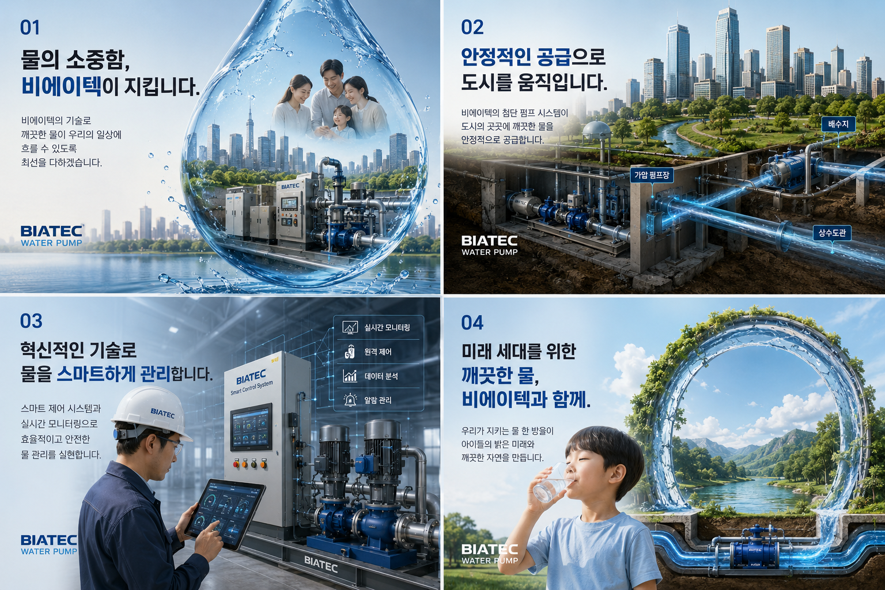

(주)비에이텍은 최고의 워터펌프 제작 및 관리 기술로 언제나 깨끗하고 안전한 물이 우리의 일상에 안정적으로 흐를 수 있도록 든든하게 받쳐줍니다. 수자원의 가치를 수호하는 비에이텍이 건강한 삶을 위한 올바른 물 마시기 습관을 제안합니다.
비에이텍의 정밀 수처리 및 펌프 기술이 약속하는 신뢰할 수 있는 물 이야기와 우리 몸의 수분 섭취 가이드라인을 소개합니다.

깨끗한 물은 우리의 삶을 윤택하게 만들고 생명을 지속시키는 가장 중요한 기본 요소입니다. (주)비에이텍의 앞선 워터펌프 제작/설치 기술로 한 방울의 물도 안전하고 소중하게 여러분의 일상까지 닿도록 끊임없이 연구합니다.
단 한 순간의 물 멈춤도 없이 도시 전체가 활력 있게 살아 숨 쉬도록, 비에이텍의 첨단 가압 펌프장 및 급수 제어 펌프 시스템이 도심 구석구석에 있는 배수지와 상수도관까지 정밀하고 일정한 압력으로 깨끗한 수자원을 안정적으로 유통합니다.
IoT 기반 스마트 제어 솔루션과 24시간 실시간 정밀 원격 제어 모니터링 시스템을 융합하여 유량과 압력을 최적화합니다. 데이터 기반 이상 징후 조기 진단 및 자동 알람 시스템으로 환경오염이나 손실 없이 안전한 유량을 유지합니다.
오늘 우리가 지켜낸 맑고 깨끗한 수자원은 자라나는 우리 아이들에게 물려줄 최고의 천연 유산입니다. 친환경 설계 및 고효율 펌프 생산 공정으로 온실가스를 저감하고, 물 순환 생태계를 복원하여 지구의 밝은 내일을 앞장서 열어갑니다.
충분한 수분 섭취는 피로 해소와 활력 증진에 탁월합니다. 내 몸에 필요한 맞춤 수분 섭취량을 계산하고 일일 물 마시기 목표를 달성해보세요!
우리 몸은 하루 동안 생물학적으로 체중에 비례하는 수분을 소모합니다. 본인의 체중을 입력하시면 과학적으로 권장하는 정확한 일일 수분 섭취 기준량을 제공해 드립니다.
※ 아래 챌린저 도구에 맞춤 목표가 실시간 반영되었습니다!
한 잔(250mL)의 물을 마실 때마다 아래의 '물 한 잔 추가' 버튼을 눌러 기록해보세요. 시각적 물컵이 채워지며 목표를 향해 나아갑니다.